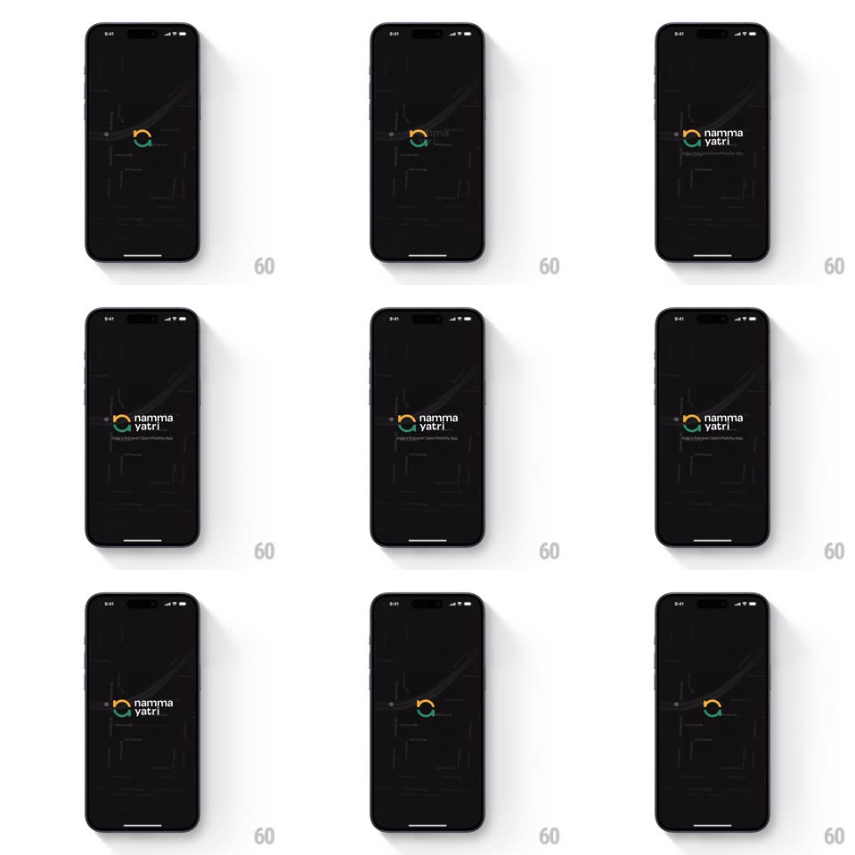

Media
Frame-by-frame

Rebuild this animation 1:1: Namma Yatri's splash - over a faint dark city map, a two-color arc spinner rotates, then settles into the circular auto-rickshaw logo as the wordmark fades in beside it.

Rebuild this animation 1:1: Namma Yatri's splash - over a faint dark city map, a two-color arc spinner rotates, then settles into the circular auto-rickshaw logo as the wordmark fades in beside it. ## Integration Integration: stack-agnostic spec - springs given as stiffness/damping, timed motions as duration + curve; map every value to your framework and animation library of choice. ## Scene A black screen with a barely-visible gray city street map line-art filling it. Center: a ring spinner made of an orange arc and a green arc chasing each other. The arcs settle into the circular Namma Yatri mark; the white "namma yatri" wordmark and tagline appear to its side/below. ## Motion spec Pattern: spinner-to-logo settle. - Map fades in first (opacity 0 to 8%, 600ms) and holds as the backdrop. - Spin phase (600-1600ms): the two arcs rotate around the ring (1 rev per 900ms), each arc ~120deg of sweep with rounded caps, one leading orange, one trailing green. - Settle (1600-2200ms): the rotation decelerates (ease-out over 600ms) while the arcs grow to fill their halves of the circle and the rickshaw silhouette details draw in inside (stroke draw, 400ms); the mark lands with a tiny scale settle (1.06 to 1, spring ~380/24). - The wordmark fades in right of the mark letter-group by letter-group (opacity + translateX 6px, 250ms), tagline following (200ms, 100ms later). - Hold ~800ms, then the whole lockup fades/slides into the app's first screen. ## Calibration - The map must stay under 10% opacity - it is texture, never readable geography. - The settle's deceleration should feel like a wheel coming to rest, not an abrupt stop. ## Reduced motion Logo and wordmark fade in statically. ## Don't miss - The orange/green arc pairing is the brand mark - don't recolor or add a third arc. - The transition from spinner to logo must be continuous: the spinner literally becomes the logo.